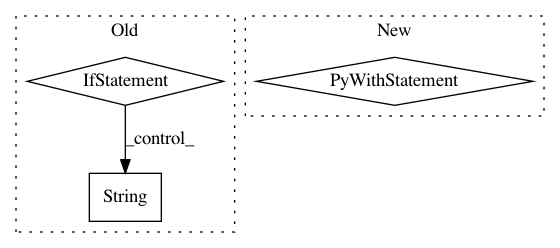

d97188ee62bc0627235578485c5df7d3245fa1ed,example6.py,,,#,14
Before Change
316, 245, 232, 175, 149, 263, 387, 283, 391, 211, 396, 352, 345, 258, 253, 163, 140, 293, 194, 342, 161, 358,
271, 156, 260, 384, 153, 277, 214]
laws_str = [str(x) for x in laws]
def get_encodes(x):
After Change
// write tfrecords
with tf.python_io.TFRecordWriter("tmp.tfrecord") as writer:
def create_float_feature(values):
return tf.train.Feature(float_list=tf.train.FloatList(value=values))
def create_int_feature(values):
return tf.train.Feature(int64_list=tf.train.Int64List(value=list(values)))
for (vec, label) in zip(list_vec, list_label):
features = {"features": create_float_feature(vec), "labels": create_int_feature([label])}
tf_example = tf.train.Example(features=tf.train.Features(feature=features))
writer.write(tf_example.SerializeToString())
// read tfrecords and build dataset from it
num_hidden_unit = 768
def _decode_record(record):
In pattern: SUPERPATTERN
Frequency: 3
Non-data size: 3
Instances
Project Name: hanxiao/bert-as-service
Commit Name: d97188ee62bc0627235578485c5df7d3245fa1ed
Time: 2018-12-02
Author: hanhxiao@tencent.com
File Name: example6.py
Class Name:
Method Name:
Project Name: keras-team/keras
Commit Name: 3b440235e237ef59ec5763c413e7f4292dab5d79
Time: 2018-04-26
Author: francois.chollet@gmail.com
File Name: keras/engine/network.py
Class Name: Network
Method Name: run_internal_graph
Project Name: deepmipt/DeepPavlov
Commit Name: e258ef3ea167b86d6680bfcc513dd207586b90f4
Time: 2018-07-03
Author: yoptar@gmail.com
File Name: setup.py
Class Name:
Method Name: read_requirements